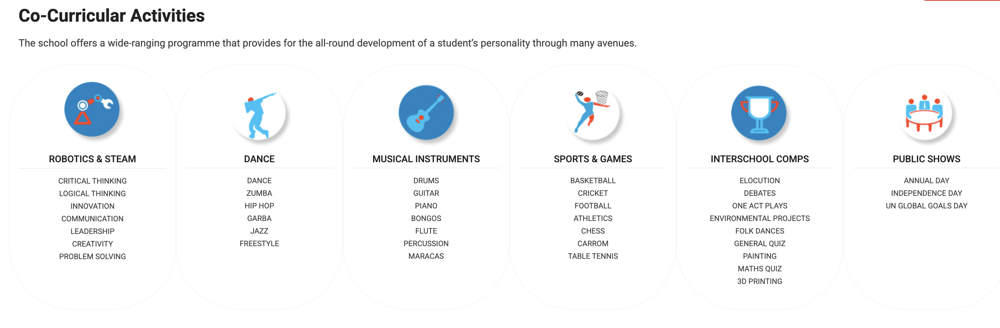

ROBOTICS: Students from grade 1 – 12 work collaboratively on STEAM kits that are based on the principles of AI/IOT/Robotics and learn coding programming (C/ Python / drag and drop) and other relevant computational skills. Science. Technology. Engineering. Arts. Mathematics. STEAM is an educational approach to learning that uses Science, Technology, Engineering, the Arts and Mathematics as access points for guiding student inquiry, dialogue, critical thinking and work through the creative process.
STEM EDUCATION: STEM education provides experiential learning for children. It gives an exposure towards project-based learning hands-on experience to learn various fundamental motor skills and helps the child to develop the analytical skills required for problem-solving. This method of education creates a differential – bringing multiple subjects together and letting the child drive his journey through a guided curriculum. STEM students have shown good results learning existing concepts of science & Maths improved language skills ability to understand and solve complex problems.
MUSICAL INSTRUMENTS: Students from grade 1- 12 learn/master musical instruments like the Drums, Guitar, Percussion and Keyboard under the guidance of musical experts.
SPORTS & GAMES: Physical education is an integral part of the curriculum. Students have a unique opportunity to be trained in cricket, football, basketball, volleyball, table tennis, badminton, lawn tennis, chess and carrom.
DANCE: Allows students from grade 1 to 7 to experience a wide range of dance styles enabling them to develop their interests and equip them with the skills and techniques to perform at their full potential. Students build confidence and work upon their intra and interpersonal intelligence.
MUSIC: Music classes are conducted, which helps students to develop their skills in singing. It also enhances the student’s capabilities to build self-confidence, promote self-esteem, support social ability and also facilitates learning other subjects.
DRAMATICS: Students from grade 1- 12 develop cognitive abilities that complement study in other disciplines. Through Drama, students learn to approach situations in an array of different manners which can help to develop creative thinking and new study techniques. Further, it builds confidence which benefits public speaking opportunities. Student group activities enhance communication between peers.
INTERSCHOOL/INTER-HOUSE COMPETITIONS: The school regularly prepares students for various competitions such as elocution, debates, one-act plays, environmental projects, folk dances, painting, general quiz, Math Quiz, 3D-Printing etc. by committed and talented staff.